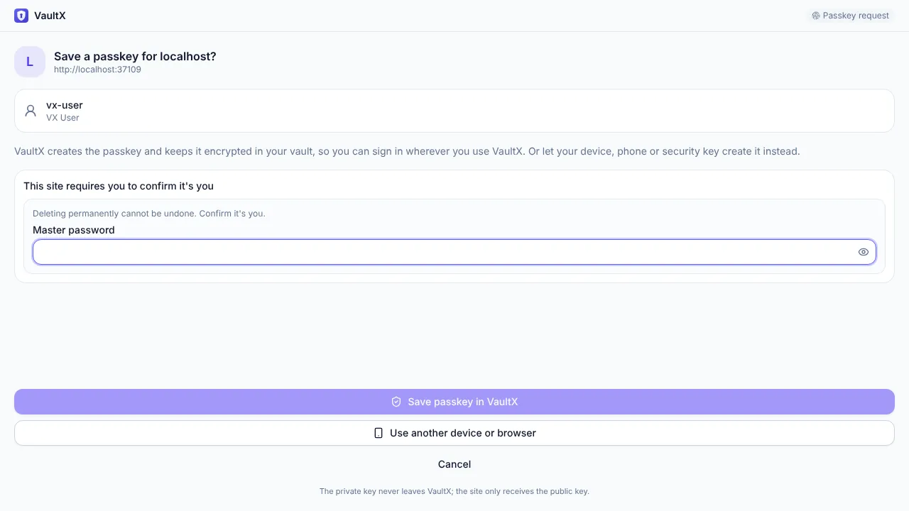
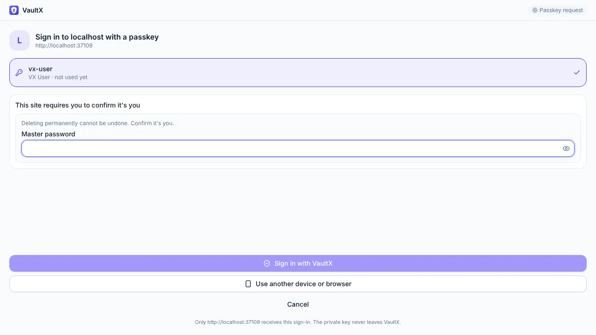
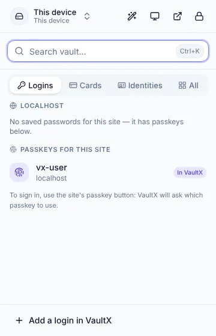
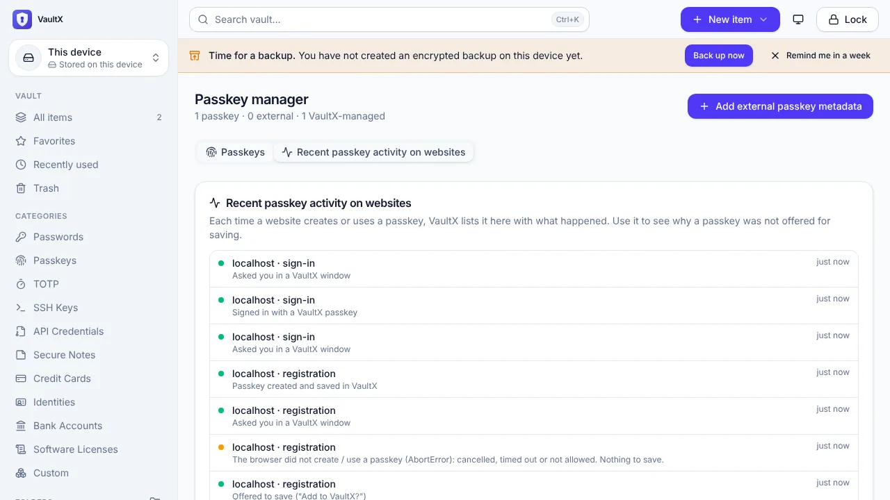

The future of sign-in, kept where you choose
Passkeys replace passwords with cryptographic keys that cannot be phished. VaultX can create and keep them for you — or work alongside your device, phone and security keys.
Save a passkey in VaultX
When a site creates a passkey, VaultX offers to keep it in your encrypted vault — so it travels with your backups and Drive sync.
- ES256 keys generated by your browser's crypto; the private key is stored only inside the encrypted item.
- Real user verification — when a site requires it, confirm with your master password or an authenticator code.
- Your choice, every time — “Use another device or browser” hands the request to iCloud Keychain, Windows Hello, your phone or a security key.

Pick an account, you're in
If VaultX holds a passkey for the site, it lists the matching accounts. Choose one and VaultX signs the challenge — the site verifies it like any other passkey.
- Bound to the site's RP ID: a passkey for one site can never be used on another.
- The toolbar popup lists the passkeys saved for the open site.


An inventory of every passkey you own
Passkeys created by your phone or security key stay there. VaultX offers to record where they are — site, account, authenticator — so you always know which accounts rely on which device.
“Add to VaultX?”
After a site creates a passkey elsewhere, save its details (never the key) with one click.
Activity log
See what happened on each site — created, signed in, cancelled by the browser — and why.
Passkey inventory
The Security Center counts your passkeys by site and by where they live.

Automatic passkey upgrades (“conditional create”) only complete with the browser's built-in password manager. VaultX shows when a site started one, so you know why nothing happened.
Your vault. Your device. Your rules.
Install VaultX in a minute. Create a master password, import from your current manager, and you are done — nothing ever leaves your browser unencrypted.